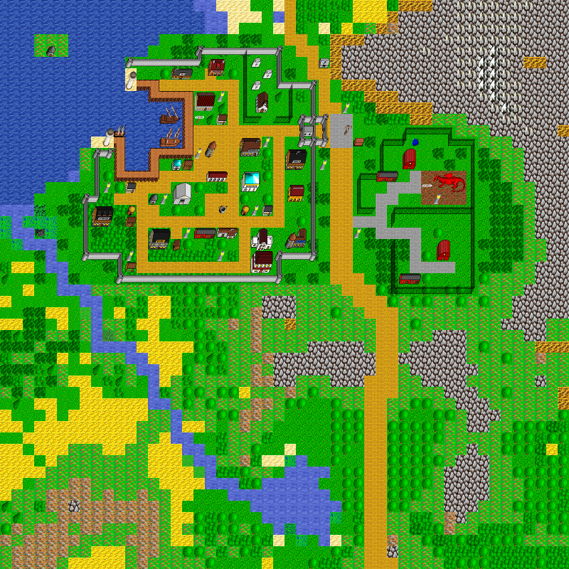

world_102_108
Map world_102_108, in region Santo Dominion. Map level: 1.
Map view:

(click for larger view)
Exits from this map:
- Draughts of Santo Dominion
- Santo Dominion Toll St.
- Tobias Tower
- Lord of the Rings
- Lord Ramsdre Mansion, Entrance
- Santo Dominion Library
- Santo Dominion City Hall
- New Cthulhu Church
- The Golden Lion
- A Little Opera
- St. Dominion Sale
- Santo Dominion Well
- Eliks General Store
- The Noble Resting
- Santo Dominion Permanent Apartment
- Seafarers Den
- North Lighthouse, Level 1
- South Lighthouse, Level 1
- Guild of Drunken Barbarian, Storage Room
- world_102_107
- Santo Dominion Imperial Post Office
- A Nice Little Hut, Level 1
- Hanz und Franz Panzer
- world_103_108
- world_101_108
- South Barn
- North Barn
- Santo Dominion Gatehouse
- North Farm
- Bank of Skud, Santo Dominion Branch
- Herb Shoppe
- Undead Bungalow
- Vexatious Hut, Entrance
- Little House of Horrors, House of Hell
- Ship to Scorn
- world_102_109
- The Little Peacock
- Mudman's Place, Northern Swamp
- Temple to Valkyrie
- Nosferatu - Specialist
- Erash Sharp Blades
- Guild of Drunken Barbarian, Main Floor
Exits to this map:
- Guild of Smoking Cauldron, Main Floor
- Guild of Mailed Fist, Main Floor
- Ship to Santo Dominion
- Guild of Black Shield, Main Floor
- Draughts of Santo Dominion
- Santo Dominion Toll St.
- Tobias Tower
- Lord of the Rings
- Lord Ramsdre Mansion, Entrance
- Santo Dominion Library
- Santo Dominion City Hall
- New Cthulhu Church
- The Golden Lion
- A Little Opera
- St. Dominion Sale
- Santo Dominion Well
- Eliks General Store
- The Noble Resting
- Santo Dominion Permanent Apartment
- Seafarers Den
- North Lighthouse, Level 1
- South Lighthouse, Level 1
- Guild of Drunken Barbarian, Storage Room
- Lone Town Dragon Hangar
- Lone Town's Ye Olde Shoppe of Transport
- Wolfsburg's Ye Olde Shoppe of Transport
- world_102_107
- Santo Dominion Imperial Post Office
- A Nice Little Hut, Level 1
- Hanz und Franz Panzer
- world_103_108
- world_101_108
- South Barn
- North Barn
- Santo Dominion Gatehouse
- North Farm
- Guild of Purple Butterfly, Main Floor
- Tobias Tower, Top
- The Golden Lion, 2nd Floor
- The Noble Resting, second floor
- Nurnberg Dragon Hangar
- Guild of Dreaming Sage, Main Floor
- Guild of Poisoned Dagger, Main Floor
- Bank of Skud, Santo Dominion Branch
- Herb Shoppe
- Undead Bungalow
- Vexatious Hut, Entrance
- Little House of Horrors, House of Hell
- Ship to Scorn
- world_102_109
- Guild of Damned Heretics, Main Floor
- Stoneville Dragon Hangar
- The Little Peacock
- Mudman's Place, Northern Swamp
- Guild of Laughing Skull, Main Floor
- Navar Dragon Hangar
- Guild of Ketsueki Itsuryuu, Main Floor
- Guild of Nenshou Youso, Main Floor
- Guild of Mockers, Main Floor
- Temple to Valkyrie
- Nosferatu - Specialist
- Erash Sharp Blades
- Guild of Drunken Barbarian, Main Floor
- Guild of Green Goblin, Main Floor
- Humanoid Training
- Lake Country Dragon Hangar
- Guild of Zaseki Dzuki Ryoku, Main Floor
No monster on this map.
Santo Dominion's map index | Region index | Global map index | World map
{kind=link}